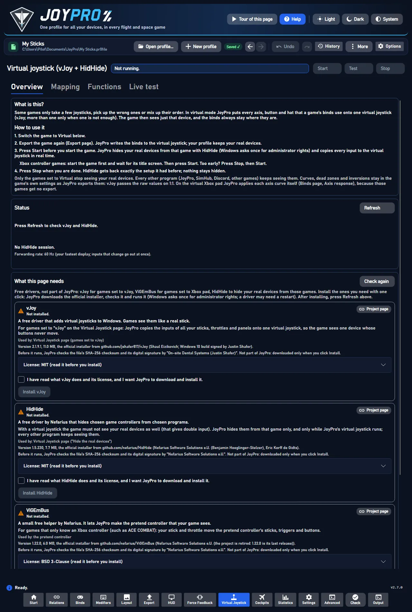

#オン
チェック ボックス説明済みツールチップ オフ: 転送でこの機能をスキップします（出力は予約されたままです）。
ゲームによっては、使えるジョイスティックの数が少なかったり、間違ったものを拾ったり、別のデバイスを接続すると順番が入れ替わったりします。仮想モードでは、ゲームの割り当てが使うすべての軸、ボタン、ハットを JoyPro が 1 つの仮想ジョイスティック（vJoy）に、ゲームパッドしか読まないゲームには 仮想 Xbox 360 パッド にまとめます。ゲームからは、入力が決して動かない 1 つのデバイスが見えます。プロファイルには実際のデバイスがそのまま残ります。さらに 仮想機能 で、Joystick Gremlin と同じことができます：軸の範囲をボタンにする、トグル、短押し / 長押し、シフト レイヤー、マクロ、モード。


flowchart LR D["スティック、スロットル、<br/>ペダル、パネル"] --> J["JoyPro がすべての入力を<br/>リアルタイムでコピー"] J --> V["1 つの vJoy デバイス<br/>または仮の Xbox コントローラー"] V --> G["vJoy または Xbox パッド<br/>に設定したゲーム"] D --> O["ほかのすべてのゲーム<br/>とプログラム：<br/>実際のデバイス"]
このページに必要なもの には無料のドライバーが表示されます：vJoy（vJoy に設定したゲーム用）、ViGEmBus（Xbox パッド）、HidHide（vJoy のゲーム用）。これらは JoyPro には含まれていません。必要なものを、そこからワンクリックでインストールしてください。Xbox コントローラーしか読まないゲーム（ACE COMBAT 8、Hell Let Loose: Vietnam）に必要なのは ViGEmBus だけです。実際のデバイスは見えないので HidHide は不要で、Windows も管理者権限を求めません。
その場合、ページの名前は 仮のコントローラー になり、これらのゲームに必要なものだけが表示されます：ViGEmBus のカード、テスト、開始。vJoy、HidHide、モードの一覧は 上級者向けの詳細を表示（vJoy、HidHide、モード） の中にあります。Xbox 専用ゲームを HOTAS で遊ぶ を参照してください。
テスト はデバイスを読み取り、ゲームが受け取る内容を ライブ テスト タブに表示します。vJoy や HidHide には触れません。スティックを動かしてバーを見てください。
ゲームの操作設定メニューには "vJoy Device" という 1 つのデバイスが表示され、そのボタンと軸に割り当てが入っています。仮想ジョイスティックが動いている間だけ、そのゲームからは実際のデバイスが見えなくなります。ほかのプログラムからは見えたままです。カーブ、デッドゾーン、反転は、引き続き JoyPro がエクスポートしたゲーム自身の設定から来ます。Xbox パッド の場合は違います。これらのゲームにはエクスポートがないので、JoyPro が各軸のカーブを自分で適用します（割り当てページ、軸の応答）。


概要：これが何で、どう使うか。vJoy（バージョン、デバイス）、HidHide、JoyPro のセッションの 状態（更新、vJoy デバイスに軸、ボタン、ハットが足りないときの 表に合わせて vJoy を設定、クラッシュ後の HidHide を復元、vJoy を最大構成に設定：軸 8、ボタン 128、ハット 4。Windows の再起動が必要）。このページに必要なもの。ゲーム（ゲームごとにネイティブ / vJoy / Xbox パッド。ゲームが 1 つのジョイスティックから何を読み取るかと、その上に警告）。オプション：実デバイスを隠す（HidHide、推奨）、仮想デバイスを使うゲームの起動と終了に合わせて自動で開始・停止（JoyPro は 3 秒ごとにゲームを探します。vJoy では、ゲームより前に開始を押すのが今でも一番確実です。上の Xbox パッドのゲームは、タイトル画面の後に開始するのが適しています）。
マッピング：表です。仮想デバイスを使うゲームが使う物理的な入力は、それぞれ仮想ジョイスティック上の決まった場所を持ちます。軸は、空いていれば同じ軸のまま（X は X のまま）、ボタンとハットは次の空き番号を使います。一度決まった場所は動かないので、ゲームの割り当ては起動のたびに同じままです。マッピングを更新 は新しい入力に場所を割り当て、表をプロファイルに保存します。
機能：仮想機能、そのモード、Gremlin のインポート、グラフ（下記）。
ライブ テスト：各 vJoy デバイスの軸のバー、押されたボタンとハットを、転送プログラムが書き込むとおりに、転送プログラムのログと一緒に表示します。仮想ジョイスティックをライブ表示（すべてのゲームで仮のコントローラーを使うプレイヤーには 仮のコントローラーをライブ表示）で、バーの表示をオン/オフします。Xbox パッドでは、割り当てた各操作部に、何をするか、どこから来るかが表示され（「A: Fire machine gun (VKB Gunfighter BTN1)」「LX: Roll (Rhino X)」）、押したボタンが点灯します。
engine vjoy pad-check で、プロファイルがパッドで何を操作できるかがわかります。

機能は仮想ジョイスティックの中、つまりデバイスとゲームが受け取るものの間で動きます。ゲームと種類を選んで 機能を追加 し、エディターで入力と出力を設定します。
| 機能 | 内容 |
|---|---|
| 軸バンド | 軸を最大 16 のバンドに分け、各バンドを 1 つのボタンにする（スロットルのデテント） |
| ボタンサイクル | 押すたびに次の出力に進む |
| トグル（ラッチ） | もう一度押すまでオンのままになる押しボタン |
| スイッチをオン/オフのパルスに | 保持型スイッチが位置ごとに 1 回パルスを送る |
| 短押し / 長押し / ダブル押し | 1 つのボタンに 3 つの役割 |
| シフトレイヤー | シフトボタンを押している間、入力が別の出力に行く |
| 軸の結合 / 分割 | 2 つのペダルを 1 つのラダーに、1 つの軸を 2 つに |
| 軸カーブ | デッドゾーン、飽和、カーブ量、反転、スライダー |
| 軸の端をボタンに、軸をハットに、ボタンを軸に、軸をエンコーダーのパルスに | 変換 |
| ターボ、マクロ | 押している間繰り返す、ボタンやキーの連続入力 |
| ハットをボタンに、ボタンをハットに、再マップ | ハットと再マップ |
| モードスイッチ | モードを変える（切り替え、押している間、トグル、巡回、戻る） |
エディター：名前、オン、キーボード出力（出力やマクロの手順でキーを押せるようにします。実際に動いているときだけ）、ノードビュー（入力 → 機能 → 出力。出力が発生している間は点灯）、ドラッグできる境目付きの軸バンドのバー、カーブ、動作するモード、切り替え先のモード、入力（デバイスと入力、クリア）、出力（vJoy のボタンや軸、Xbox の操作部やキー。リレーションを割り当て でその出力にリレーションを割り当てます）、設定とマクロの手順。試す は、エディター内でスライダーと押しボタンを使って機能を動かします。vJoy やゲームには何も送られません。保存 で保存します。動作中の仮想ジョイスティックには、停止して開始し直すと反映されます。
つなげる：入力には、デバイスの代わりに別の機能の出力を読み込ませることができます。入力のデバイス一覧で ⚙ f1 ... を選ぶか、すべての機能のグラフ で出力の点（右端）から入力の点（左端）へドラッグします。ループはできません。ワイヤーをクリックしてから、その × で切断します。
flowchart LR T["スロットルの軸"] --> B["f1 軸バンド<br/>band3 = アフターバーナー"] B --> TG["f2 トグル<br/>band3 を読む"] TG --> V1["vJoy ボタン 40"] BTN["スティックのボタン 5"] --> M["f3 モードスイッチ<br/>押している間 → 着陸"]
モード（レイヤー）：状況（戦闘、着陸 ...）に応じて、入力に別の役割を与えます。モードは別のモードを継承できます。機能はチェックしたモードで動作します（チェックなし = すべてのモード）。モードを追加、名前の変更、×（削除）、開始時（転送プログラムが開始するときのモード）。現在のモードにはライブの印が付きます。
ゲームを選び、必要なら ゲームの機能とモードを置き換える にチェックを入れ、Gremlin プロファイルをインポート... を押して .xml（R13 または R14）を選びます。JoyPro はまずレポートを表示します：何に変換するか、何が できないか（起動条件、マウス操作、Python プラグイン、サウンド ...）、何が インポートしたが異なるもの か。インポート を押すまで何も保存されません。モード、再マップ、カーブ、マクロ、結合した軸、テンポ、チェーン、トグルのコンテナーは、機能とモードになります。その後、ゲームを vJoy に設定し、vJoy の出力に乗っているリレーションをそのまま使うか割り当て、エクスポートして 開始 します。HidHide と転送プログラムが、Gremlin のデバイス隠しとバックグラウンドプログラムの代わりになります。
ビューモデル：MainWindowViewModel.VirtualJoystick.cs（状態、表、開始/テスト/停止、自動開始、ライブ表示）、MainWindowViewModel.VirtualFunctions.cs、MainWindowViewModel.VirtualModes.cs（モード、Gremlin のインポート）、VirtualFunctionEditorViewModel.cs。ビュー：VirtualJoystickView.axaml、VirtualFunctionEditorView.axaml、Views/Controls/VirtualFunctionGraphView.cs、VirtualFunctionFlowView.cs、AxisBandEditor.cs。
仮想ジョイスティックの 開始：
| # | 誰が | どうなるか |
|---|---|---|
| 1 | あなた | 開始 を押します。 |
| 2 | エンジン | vjoy map：新しい入力にスロットが割り当てられ、表はプロファイルに保存されます。 |
| 3 | エンジン | vjoy forwarder-config：表と機能を解決したもの。 |
| 4 | エンジン | vjoy apply-hidhide は先にジャーナルを書き、その後 vJoy のゲームから物理デバイスを隠します（HidHide は一度だけ管理者権限を求めます）。Xbox コントローラーしか読まないゲーム：「HidHide は不要」、確認は出ません。 |
| 5 | JoyPro.VJoy | run --sink vjoy --parent-pid N：毎回（たとえば 1 秒に 144 回）デバイスを読み、機能を実行し、vJoy または Xbox パッドに書き込みます。 |
停止：
| # | 誰が | どうなるか |
|---|---|---|
| 1 | あなた | 停止 を押します。 |
| 2 | JoyPro.VJoy | 停止：出力はニュートラル、キーは離されます。 |
| 3 | エンジン | vjoy restore-hidhide は、前とまったく同じ設定に戻します。 |
Pr0file.VirtualJoystick）。engine vjoy map（--prune、--reset）、engine vjoy mode（ゲームごとに native | virtual | xbox）、engine vjoy status、engine vjoy settings（JoyPro が使う vJoy デバイス）、engine vjoy configure-vjoy（vJoyConfig。避ける軸以外は何も取り除きません）、engine vjoy limits。engine vjoy apply-hidhide、engine vjoy restore-hidhide、engine vjoy recover：変更の前に必ず記録を書き込むので、クラッシュしても復元できます（HidHide を復元）。engine vjoy functions types、engine vjoy functions list、engine vjoy functions add --game、engine vjoy functions set --game、engine vjoy functions remove --game、engine vjoy functions test（シミュレーション。vJoy には何も送られません）、engine vjoy modes list。ゲームごとにプロファイルに保存されます（VJoySettings.Functions[game]、VJoySettings.Modes[game]）。その出力は表で予約されます。同じ評価コードが、エンジンのテスト、エディターのプレビュー、転送プログラムで動きます。機能は毎回の処理で依存関係の順に評価され、処理ごとのメモリ確保はありません（機能 50 個で 1 回あたり約 10 µs）。engine vjoy import-gremlin（レポートには --dry-run、--replace、--vjoy-device）。gui/JoyPro.VJoy（JoyPro.VJoy.exe run --config ... --sink vjoy|dry）。入力は非排他の DirectInput、出力は vJoyInterface.dll / ViGEmBus です。テストは dry シンクを使い、HidHide は使いません。リファレンス：virtual-joystick、ドライバー：components。
このページの元になった機能ドキュメント（リポジトリから生成）：
プログラムのソースから読み取った 43 個のコントロール：説明済み 43、ソースの情報（ツールチップ、コード コメント、エンジン呼び出し）付き 0、今後拡充 0。
ツールチップ オフ: 転送でこの機能をスキップします（出力は予約されたままです）。
ツールチップ キーが必要な場合のみ: 出力とマクロ ステップでキーボードのキー（KEY_...）を押せるようにします。キーは仮想ジョイスティックが本番実行中（[開始]）の場合のみ送信され、[テスト] では送信されません。
機能エディター、デフォルトはオフ: この機能の出力とマクロの手順でキーボードのキーを押せるようにします。
キーが送られるのは仮想ジョイスティックが実際に動作している間だけで、「テスト」や「試す」では決して送られません。
ツールチップ 下で設定した入力（スライダー、ボタン）でこの機能をここで実行します。vJoy やゲームには何も送信されません。ページで [テスト] または [開始] 中は、バーに実デバイスが表示されます（LIVE）。
「試す」: 下の行で設定した入力で、エディター内で機能をそのまま実行します。出力が発生すると、ノード ビューとバンド バーが点灯します。
vJoy、Xbox パッド、ゲームには何も送られません。
ツールチップ 最も広いバンドを 2 つに分割します（最大 16 バンド）。
軸カーブ機能: 出力軸が逆方向に動作します。
軸カーブ機能: 軸を中心と中心のデッドゾーンのない片側の軸として扱います。
機能の番号付きの部分を 1 つ減らします。サイクルの手順、シフト レイヤーの入力、マクロの出力です。
エディターのモードのチェック: 「動作するモード」では、機能がそのモードで動作します。「切り替え先のモード」では、モード切り替えがそのモードに移ります。
この入力の行をクリアするので、機能はそこから何も読み取らなくなります。
ツールチップ 試す: ボタンを押し続けます（もう一度クリックで離します）
ツールチップ 下で指定したリレーションを、通常の vJoy ボタンと同様にこの出力に割り当てます（engine binds set）。その後、ゲームをもう一度エクスポートしてください。
vJoy に送られる出力上: 「出力にリレーションを割り当て」で指定したリレーションを、ほかの vJoy のボタンや軸と同じようにこの出力に割り当てます。
その後、割り当てが反映されるようにゲームをもう一度エクスポートしてください。
マクロ: 手順を追加します。キーは「キーボード出力」がオンのときだけ使え、仮想ジョイスティックが実際に動作している間だけ入力されます。
仮のコントローラーをオンにします。スティックで操作できるようになります。
仮想デバイスをオンにします。実際のスティックとスロットルでリアルタイムに操作します。
仮のコントローラー: ゲームを起動し、タイトル画面を待ってから押します。vJoy: ゲームを起動する前に押します。
ツールチップ デバイスを読み取り、仮想ジョイスティックが受け取る内容を下に表示します。vJoy と HidHide は変更されません。
仮のコントローラーが受け取る内容を表示します。何も変わりません。
スティックを読み取り、仮のコントローラーまたは仮想ジョイスティックが受け取る内容を「ライブ テスト」タブに表示します。
何も変更されません: vJoy、仮のコントローラー、HidHide には触れないので、補助プログラムがなくても動作し、プロファイルもそのままです。
ツールチップ 転送を停止し（仮想ジョイスティックはニュートラルになります）、HidHide を以前とまったく同じ設定に戻します。
仮のコントローラーをオフにします。
仮のコントローラーまたは仮想ジョイスティックをオフにします。HidHide は以前とまったく同じ設定に戻ります。
転送が自然に終了したときも、JoyPro は自動で同じことを行います。
ツールチップ vJoy、HidHide、デバイスを確認します（読み取り専用: 何も変更されません）
ツールチップ vJoyConfig を 1 回実行し（Windows が管理者権限を求めます）、vJoy デバイスに表に必要な軸、ボタン、ハットを設定します。デバイスから何かを減らすことはありません。
vJoy デバイスに表が必要とする軸、ボタン、ハットが足りないときに表示されます。vJoyConfig を一度実行し、不足しているものを追加します。
デバイスから何かを取り除くことはありません。
ツールチップ HidHide を JoyPro が変更する前の設定に戻します（例: JoyPro や PC がクラッシュした後）。
JoyPro の HidHide セッションが開いている間に表示されます。JoyPro が変更する前の設定を HidHide に戻します。JoyPro や PC がクラッシュした後などに使います。
ツールチップ JoyPro が使用する各 vJoy デバイスを軸 8、ボタン 128、ハット 4 に設定します（管理者確認 1 回）。有効にするには Windows の再起動が必要です。JoyPro が Windows を再起動することはありません。
先に確認してから vJoyConfig を一度実行し、JoyPro が使う各 vJoy デバイスに 8 本の軸、128 個のボタン、4 個のハットを持たせます。
反映するには Windows の再起動が必要です。JoyPro が Windows を再起動することはありません。
ツールチップ インストール済みで動作中のものを確認します（読み取り専用）
ツールチップ このゲームを推奨の仮想モードに切り替えます。その後、ゲームをもう一度エクスポートしてください。
1 つのデバイスしか読まないとわかっているゲームで使ってください。ゲームを提案されたモードに切り替えます。
その後、割り当てが仮想デバイスに入るように、ゲームをもう一度エクスポートしてください。
ツールチップ オフ: ゲームから実デバイスと仮想ジョイスティックの両方が見え、入力が二重になることがあります。推奨: オン。
デフォルトはオン: 「開始」は、「仮想」に設定したゲームから HidHide で実際のデバイスを隠すので、ゲームには仮想デバイスだけが見えます。
オフ: それらのゲームには実際のデバイスと仮想デバイスの両方が見えるため、入力が二重になることがあります。
デフォルトはオフ。オン: JoyPro は 3 秒ごとに「仮想」に設定したゲームを探し、ゲームの起動時に仮想ジョイスティックを開始し、ゲームの終了時に停止します。
一部のゲームは起動時にしかデバイスを探さないため、ゲームより先に「開始」を押すのが引き続き最も確実です。
上級者向けの部分を表示します。通常は必要ありません。
仮想ゲームがすべて仮のコントローラーを使うときだけ表示されます: 上級者向けの部分を表示します。
デフォルトはオフです。再起動後も保持されます。
ツールチップ 新しい入力にスロットを割り当て、表をプロファイルに保存します。既にスロットのある入力が移動することはありません。
「マッピング」タブ: 仮想ゲームが使う新しい入力すべてに仮想ジョイスティックのスロットを割り当て、表をプロファイルに保存します。
すでにスロットがある入力は移動しないので、ゲームの割り当ては変わりません。
ツールチップ 空いている仮想出力で機能を追加します。その後、エディターで入力を選択してください。
選んだ種類の機能を、空いている仮想出力とともに選んだゲームに追加し、エディターで開きます。その後、そこで入力を選んで「保存」を押してください。
ツールチップ モードを削除します（先に確認します）
モード上: 確認の後、モードを削除します。そのモードだけで動作していた機能はすべてのモードで動作するようになり、モード切り替えの切り替え先からは外れ、そのモードを継承していたモードはその親モードを継承します。
ツールチップ 転送はこのモードで開始します
Joystick Gremlin プロファイルを選び、ドライ ランとしてインポートを実行します。レポートには、見つかったデバイス、作成される機能とモード、インポートできないもの、違いが表示されます。
まだ何も保存されません。
機能を右側のエディターで開きます。
機能をオンまたはオフにします。オフ: 転送はそれをスキップし、その出力は予約されたままです。
ツールチップ ゲームのすべての機能をノードとして表示: 出力を入力にドラッグして機能をつなげます
「すべての機能のグラフ」/「エディター」: 右側を、ゲームのすべての機能のグラフと、「編集」で開いた機能のエディターとで切り替えます。
切り替えても、エディターの未保存の編集は保持されます。
ツールチップ 機能をプロファイルに保存します。実行中の仮想ジョイスティックには、[停止] と [開始]（または [テスト]）の後に反映されます。
ツールチップ 保存せずにエディターを閉じます。
報告された Gremlin プロファイルをゲームにインポートし、その機能のグラフを表示します。
その後、リレーションを vJoy の出力に割り当て、ゲームをエクスポートして「開始」を押してください。
何もインポートせずに Gremlin のレポートを閉じます。